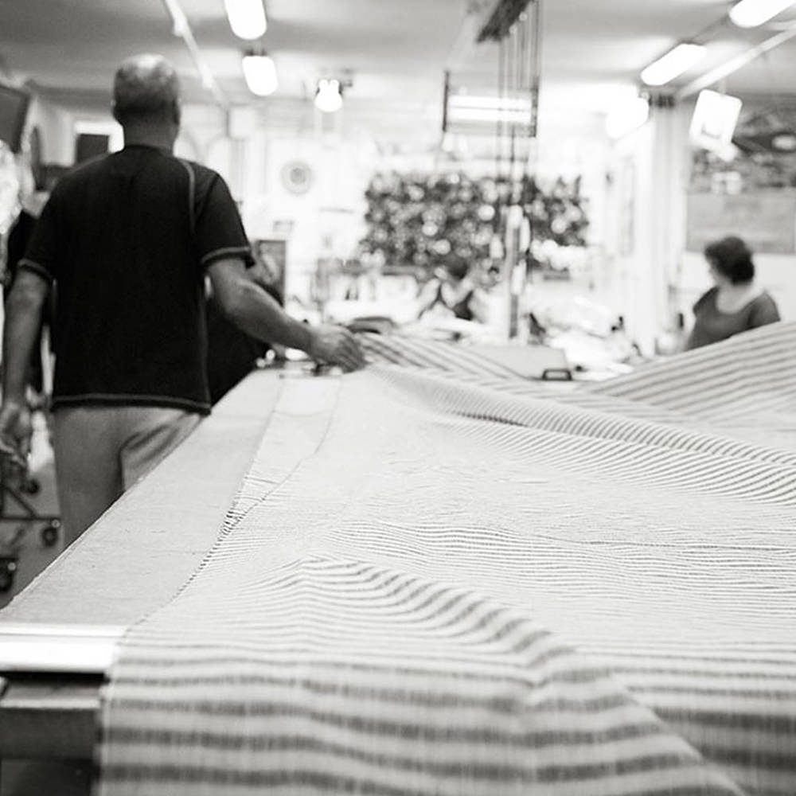

| ABOUT | BRAND | CONTACT | SHOP |
| ABOUT | BRAND | CONTACT | SHOP |
If you’re someone who is always on the lookout for handmade clothing and natural designs, Valletta’s Blue Shop is the perfect place for you.
At Blue Shop, skilled artisans pour their love, care and passion into natural fabrics to create elegant styles and unique designs.
We at Blue Shop, are passionate about nature and love to work with linen and cotton. Both are glorious materials which can be textured and woven in a number of different ways.
Ancient looms are used to guarantee an ethereal result full of originality, tenderness and care.
We stock a number of versatile and convenient items which are easy to fall in love with. We cater for women of all ages, presenting our beloved clients with boho-chic dresses, bags, shawls and scarves.
The versatility and simplicity of the natural fabrics we use is a centrepiece in our boutique. We strive towards presenting all of our clients with elegance, style and natural lustre while keeping our fits and materials as simple and functional as possible. Most of our stock, chiefly the bags and jewellery, are one of a kind. Meaning that you will only find one version of it in our shop and nowhere else.
We also specialize in handcrafted jewellery – all made tenderly by a team of skilled artisans. Every item which you will find in our boutique is an impeccable and unique model.
Naturally handmade, capturing, bewitching and drenched in simplicity and convenience.
We strive towards presenting our clients with the finest and most outstanding pieces imaginable. Our Staff is helpful, knowledgeable and easy to approach. So if you’re looking for a classy and timeless piece, but don’t know where to start, Blue Shop is the place for you.
Our stock is varied and elegant, suitable for any occasion.